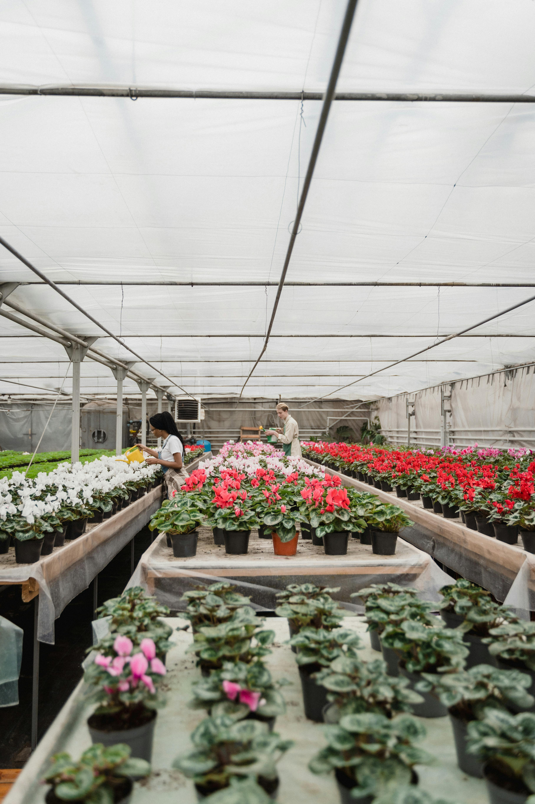
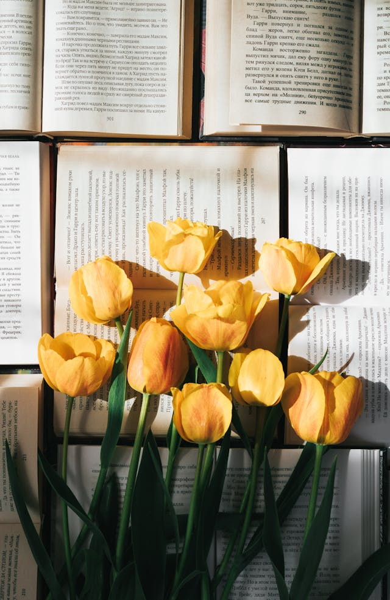
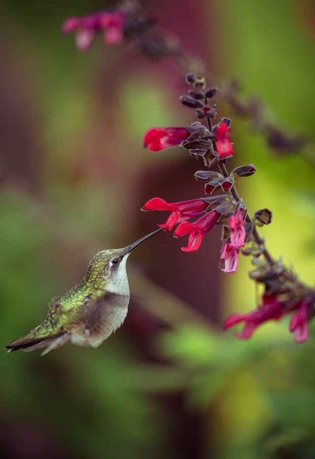
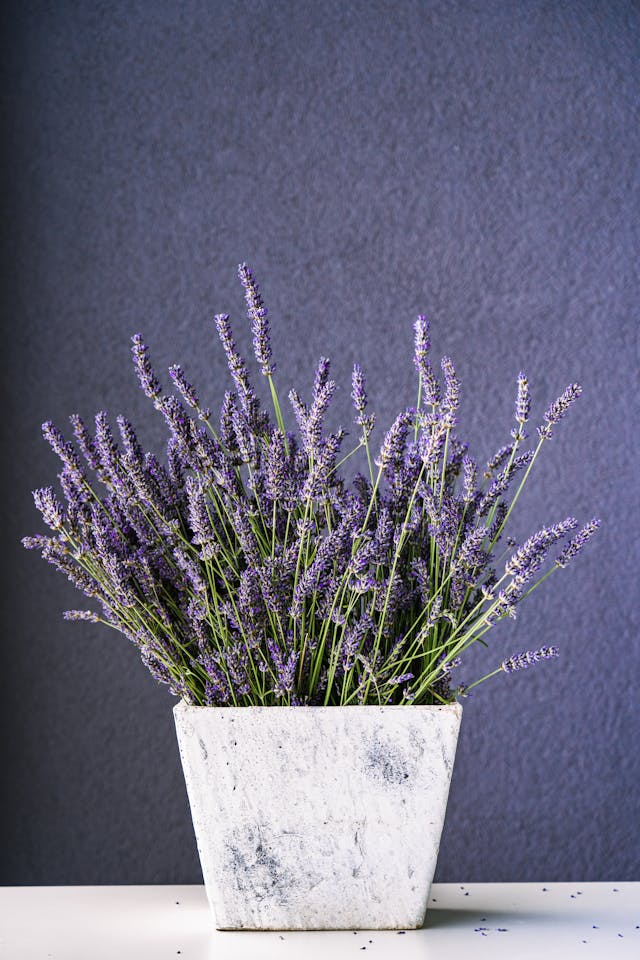

Plant joy, harvest luck!
Exclusive shrubs on sale now,
perfect for every home garden!

Tulip🌷
Tulips are spring-blooming flowers available in almost every color imaginable.The Netherlands is famous for tulip cultivation, and “tulip mania” in the 1600s made them extremely valuable.

Hibiscus🌺
In the language of flowers, yellow roses convey feelings of appreciation and platonic love rather than romantic love. They were especially popular in Victorian times as a symbol of joy and happiness.

Lavender🪻
Lavender features slender, fragrant purple flowers and silvery-green foliage.Lavender has been used for centuries for relaxation and medicinal purposes, including sleep aid and stress relief.